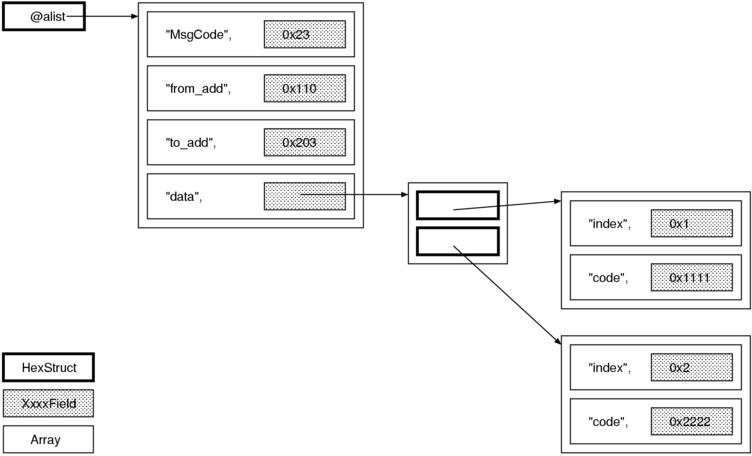

あなたの Ruby コードを添削します 【第 2 回】 HexStruct.rb
著者：青木峰郎
編集：ささだ
- はじめに
- HexStruct のユースケース
- コーディングスタイル
- 型の宣言
- 役割の分配とメソッド名
- アクセサメソッドの定義
- 文字列との比較
- データ構造
- 全体に関係する疑問
- 添削終了！
- おわりに
- 著者について
- あなたの Ruby コードを添削します 連載一覧
はじめに
秋です。締め切りの季節です。
応募が全然なかったら自虐的に自分の昔のコードの ダメ出しでもするしかないかなあと心配していましたが、 幸いにも今月は新しいコードを投稿していただけました。 今回のお題は Yac さんに提供していただいた HexStruct です。
今回のお題
HexStruct はシリアライズされた構造体を扱うライブラリです。 シリアライズ (serialize) とは、オブジェクトをバイト列に変換することです。 Ruby オブジェクトの代表的なシリアライズ形式としては Marshal が挙げられます。
HexStruct が扱うのは特殊なシリアライズ形式で、 シリアライズ対象が数値の構造体だけに限定されています。 そのシリアライズ結果の文字列で 16 進表現の数値が使われるため、 そこから HexStruct と名付けられたようです。 六角形の構造体を扱うわけではありません。
ではまず最初にオリジナルのコードとテストスクリプトを示します。
- hex_struct.rb (別ページで表示)
- test_hexstruct.rb (別ページで表示)
- hexstruct.tar.gz (まとめてダウンロード)
HexStruct は Ruby ライセンスですので、 添削後のコードも Ruby ライセンスで公開します。 ただし、添削後のコードはスクラッチから書き直したので わたしのコピーライトのみにしました。
テストについて
今回は応募していただいたコードに RubyUnit を使ったテストコードがついていたので、 これを無変更ですべて通そう、かと、 最初は思っていたのですが、途中で方針を変えました。 テストで示されるインターフェイスには賛成できなかったので、 まずわたしの考える「より適切な」インターフェイスを使ったテストを書き、 それからそのインターフェイスを実装しました。 従って、添削前後では使いかたからしてまったく違う別物になっています。
HexStruct のユースケース
前回の Pukipa は使いかたが相当に限定されていたので 使いかたの説明はほとんどしませんでしたが、 HexStruct はやや複雑ですから最初に使用例を紹介しておきます。
基本的な使いかた
まずは基本的な使いかたを示します。
require 'hex_struct'
class FixedSizeFrame < HexStruct
STRUCT = [
[:MsgCode, 2],
[:from_add, 3],
[:to_add, 3],
[:data, 5],
]
end
frame = FixedSizeFrame.new("002B000FF00002C3010203040A")
p frame.MsgCode # "002B"
p frame.from_add # "000FF0"
p frame.to_add # "0002C3"
p frame.data # "010203040A"最初に、HexStruct を継承したクラスを作ります。 そのクラスに STRUCT という定数を定義して、 その値によって構造体の型を定義します。 上記の例ならば、MsgCode が 2 バイト固定長、 from_add が 2 バイト固定長……という具合です。
定義を済ませたら、あとは文字列を new するとパースされ、 構造体のメンバにメソッドでアクセスできるようになります。 各メンバの値は文字列です。
可変長フィールド
次は可変長フィールドの例です。
require 'hex_struct'
class VariableSizeFrame < HexStruct
STRUCT = [
[:MsgCode, 2],
[:from_add, 3],
[:to_add, 3],
[:data, -1],
]
end
frame = VariableSizeFrame.new("0023000FF0000203010203040A")
p frame.MsgCode # "0023"
p frame.from_add # "000FF0"
p frame.to_add # "000203"
p frame.data # "010203040A"可変長フィールドは -1 で宣言します。 VariableSizeFrame では data メンバが可変長です。
また可変長フィールドには隠れパラメータとしてバッファ長が設定されています。 このバッファ長は整数をセットする限りでは変化しないのですが、 文字列をセットすると変化します。
frame.data = 0x01
p frame.data # "0000000001" # バッファサイズは変化しない
frame.data = "0102030405060708" # より長い文字列を代入
frame.data = 0x01
p frame.data # "0000000000000001" # のびたなお、この例からわかるように、 HexStruct はメンバの値として文字列と整数を両方受け付けますが、 参照すると常に文字列が返ります。
構造体のネスト
構造体はネストできます。 ただし STRUCT 定数ではそのことが宣言できないので、 まず通常のフィールドとして宣言し、 あとでパースしなおして構造体を代入します。
require 'hex_struct'
class VariableSizeFrame < HexStruct
STRUCT = [
[:MsgCode, 2],
[:from_add, 3],
[:to_add, 3],
[:data, -1],
]
end
class DataPart < HexStruct
STRUCT = [
[:DataType, 2],
[:Len, 1],
[:data, -1],
]
end
frame = VariableSizeFrame.new("0023000110000203001103AABBCC")
frame.data = DataPart.new(frame.data)
assert_equal "0011", frame.data.DataType
assert_equal "03", frame.data.Len
assert_equal "AABBCC", frame.data.data構造体の配列
最後に、構造体の配列が扱えます。 ただし構造体の配列も宣言ができないので、 一度パースしてから代入して扱います。
require 'hex_struct'
class VariableSizeFrame < HexStruct
STRUCT = [
[:data, -1],
]
end
class RepeatPart < HexStruct
STRUCT = [
[:index, 1],
[:code, 2],
]
end
frame = VariableSizeFrame.new
frame.data = ["011111", "022222", "033333"].map {|str| RepeatPart.new(str) }
assert_equal "01", frame.data[0].index
assert_equal "1111", frame.data[0].code
assert_equal "02", frame.data[1].index
assert_equal "2222", frame.data[1].codeコーディングスタイル
では添削を始めます。 最初は前回と同じく、内容とは関係ない、 見ために関わる部分から見ていきましょう。 今回は多分に個人的な趣味に走った見解を示します。
()
def HexStruct::size()まずこの行ですが、わたしは「()」 (空の括弧のみ) がどうも好きになれません。 呼ぶときにはローカル変数とはっきり区別するため付けることもあるのですが、 定義時に「()」が付いていると意地でも消したくなります。
::
def HexStruct::size()さらに同じ行ですが、わたしは特異メソッド定義の「::」にも拒否反応が出ます。 だいたいあれです、:: を使いたがるのなんて C++ マニアだけです。 Ruby で書くときはあきらめてドットを使ってください。
例外クラスの定義
class NoMemberError < StandardError
end普通のクラスを一行で書く人はあまりいないと思いますが、 わたしはなぜか例外クラスだけは一行で書くことにしています。 たとえば次のように。
class NoMemberError < StandardError; endこう書きたくなるのは、たぶん、 例外クラスの定義では本体を書くことがほとんどないからでしょう。
alias, private と空行
次はこの部分です。
def byte_size()
@item_list.flatten.join('').size / 2
end
alias size byte_sizeわたしなら def と alias の間に空行を入れます。
def byte_size()
@item_list.flatten.join('').size / 2
end
alias size byte_sizeなぜならば alias は別のメソッドの定義だからです。 def と def の間に空行を入れるのが当然であるならば、 def と alias の間にも空行があってしかるべきです。
と言いつつ、わたしも alias と alias の間には空行を入れないわけですが、 それはそれ！ これはこれ！ ということで、深く追究はしません。
クラスチェック
HexStruct では随所に is_a? を使ったクラスチェックが入っていました。 Ruby ではクラスをチェックする方法にもいくつか書きかたがあります。
- Object#is_a?
- Object#kind_of?
- Class#===
- (結果として === を使うが) case 文
kind_of? は is_a? の alias ですから、効果は同じです。 しかし最近は三人称を避けるべきという理由で kind_of? が推奨されています。
また、Class#=== でもクラスチェックができます。 例えば obj.kind_of?(String) は String === obj と同じです。
わたしも昔は === が打ちやすくていいなあ〜とか言っていた時期もありましたが、 最近 kind_of? 派に転向しました。 なぜなら、レシーバにチェック方法を選ばせればポリモルフィズムが働くからです。 ぶっちゃけて言えば、kind_of? を適切に再定義できるということです。 このことは例えば dRuby を使う場合には重要になります。
それから、念のために書きますが、こう書いたからといって 「クラスチェックをしろ」と言ったつもりは毛頭ありません。 むしろ、可能な限りクラスをチェックしなくて済むように設計すべきだと思います。 どうしても書かなければならない場合には kind_of? を使うのがよいだろうというだけです。
ファイル名
コーディングスタイルに入るかどうかは微妙ですが、 他に入れる場所がないので、最後にファイル名について述べます。
オリジナルのファイル名は hex_struct.rb となっていました。 しかし Ruby ではクラス名を単純に downcase して ファイル名を決定するのが基本なので、hexstruct.rb としたほうがよいでしょう。
型の宣言
ここからはコードの意味に踏み込みつつ添削を進めていきます。 まずは型の宣言方法を検討しましょう。
問題
HexStruct では STRUCT という定数で型を宣言していましたが、 この方式はイマイチだと思います。 STRUCT という名前もさることながら、 定数で型を宣言するというのが納得できません。 STRUCT という定数と、構造体の型には何もつながりがないからです。
そんなことを言いながらわたし自身も net/http で似たようなことをやっていますが、 あれは自他ともに認める失敗作なので事例として挙げるには不適切です。 また、net/http の場合はライブラリの外で定数を定義する必要はありませんが、 HexStruct はユーザに定数を定義させているところが問題を大きくしています。
それから、可変長フィールドを宣言するために -1 という特別な値を使うのも問題です。 「-1」という字面からは、 それが可変長フィールドであるということが全くわからないからです。 C 言語ならともかく、Ruby なら他にも手法がたくさんあるのですから、 特別な意味を表すために 0 だの -1 だのを使うのは避けましょう。 この場合なら、nil のほうがまだ納得できます。 よりよい改善案は以下で示します。
改善案 (1) メソッドを使う
では改善案を考えていきましょう。
最初の案は、組み込みライブラリの Struct のように、メソッドだけで解決することです。 この方法では例えば FixedSizeFrame を次のように定義できます。
FixedSizeFrame = HexStruct.new([:MsgCode, 2],
[:from_add, 3],
[:to_add, 3],
[:data, nil])この方法ならば STRUCT という余分な定数は必要なくなります。 ただ、配列やネストした構造体の定義がやや汚くなりそうです。
改善案 (2) ブロックを使う
この方法の変種として、次のようにブロックを使う方法も考えられます。
FixedSizeFrame = HexStruct.define {|x|
x.fixed_size_field :MsgCode, 2
x.fixed_size_field :from_add, 3
x.fixed_size_field :to_add, 3
x.variable_size_field :data
}define のブロック引数の x は新しいクラス (FixedSizeFrame) を指しており、 それに対して fixed_size_field や variable_size_field というメソッドを呼んで フィールドを定義していきます。 この方法だと fixed_size_field や variable_size_field などのメソッド名で 型を明示できるので、引数の意味も明らかになります。 また、構造体のネストや配列の定義も自然と考えつきます。 例えば次のようにすればよいのです。
# 構造体の配列を定義する
ArrayFrame = HexStruct.define {|x|
x.list_field(:list) {|y|
y.fixed_size_field :index, 1
y.fixed_size_field :code, 2
}
}
# ネストした構造体を定義する
NestedFrame = HexStruct.define {|x|
x.fixed_size_field :MsgCode, 2
x.fixed_size_field :from_add, 3
x.fixed_size_field :to_add, 3
x.struct_field(:sub) {|y|
y.fixed_size_field :DataType, 2
y.fixed_size_field :Len, 1
}
}改善案 (3) module_eval を使う
しかし、こうなってくると x. だの y. だのが邪魔に思えます。 こいつらをなんとか取れないものでしょうか。
そういうときに便利なのが module_eval です。 ブロックつきの module_eval を使うと FixedSizeFrame の定義は次のように短縮できます。
FixedSizeFrame = HexStruct.define {
fixed_size_field :MsgCode, 2
fixed_size_field :from_add, 3
fixed_size_field :to_add, 3
variable_size_field :data
}この define のブロック中では self が FixedSizeFrame オブジェクトに入れ換わっているので、 fixed_size_field や variable_size_field をレシーバなしで呼べるわけです。 こうなるといま世間で噂の DSL (Domain Specific Language) ぽくなってきます。 わたしは昔これをやりすぎて酷いめにあったので DSL はあまり好きではないのですが、 今回は流行に媚びておきます。
実装
今回は改善案 (3) を実装することにしました。 以下に該当部分のコードを示します。
class HexStruct2
class << self
def define(&block)
new_class(&block)
end
def fixed_size_field(name, byte_size)
define_field name, FixedSizeField.new(nil, byte_size)
end
def variable_size_field(name)
define_field name, VariableSizeField.new(nil)
end
def struct_field(name, &block)
c = new_class(&block)
define_field name, StructField.new(nil, c)
c
end
def list_field(name, &block)
c = new_class(&block)
define_field name, ListField.new([], c)
c
end
private
def new_class(&block)
c = Class.new(::HexStruct2)
c.instance_variable_set :@field_specs, []
c.module_eval(&block)
c
end
def define_field(name, prototype)
@field_specs.push [name.to_s.intern, prototype]
define_field_accessor name
endまずクラス名についてですが、クラス名がオリジナルと同じだと テストなどがややこしいことになるので、HexStruct2 と名前を変えました。
それから、このコードではいきなり特異クラス定義文が使われているのでこれを説明しましょう。 特異クラス定義文というのは、特異メソッドをまとめて定義するときに使う構文です。
class << HexStruct2
def a() ... end
def b() ... end
def c() ... end
endが、
def HexStruct2.a() ... end
def HexStruct2.b() ... end
def HexStruct2.c() ... endと同じ意味になります。したがって、 今回は define や fixed_size_field, variable_size_field, list_field などが すべて HexStruct2 のクラスメソッドになります。
特異クラス文は特異メソッドをまとめて定義するために使われることがほとんどですが、 そのほかにも、クラスメソッドを private にしたり、alias を定義したり、 などの操作がやりやすいという特徴があります。
残るポイントは new_class メソッドです。 このメソッドは細かく見ていきましょう。
def new_class(&block)
c = Class.new(::HexStruct2)
c.instance_variable_set :@field_specs, []
c.module_eval(&block)
c
endまず Class.new(::HexStruct2) で HexStruct2 を継承したクラスを作ります。 続いて instance_variable_set で その新しいクラスのインスタンス変数 @field_spec を初期化します。 最後に module_eval を使い、 そのクラスのうえで define のブロック引数 (block) を評価します。 「クラスのうえで評価する」とは、
HexStruct2.module_eval {
....
}と書くと、
class HexStruct2
....
endと書いたのとほとんど同じ効果があるということです。 したがって、
C = HexStruct2.define {
....
}は
class C < HexStruct2
@field_specs = []
....
endと書いたのとほぼ同じ効果があるわけです。ですから define のブロック内では HexStruct2 のクラスメソッドである fixed_size_field や variable_size_field が呼べます。
コードの残りの部分は通常の Ruby プログラミングの範囲で理解できるでしょう。 FixedSizeField, VariableSizeField などは構造体のフィールドを表現するクラスであり、 そのインスタンスをフィールド名とともに @field_specs に記憶しておきます。
define_field の中にある define_field_accessor についてはあとの節で改めて話します。
ところで、本当は @field_specs には インスタンス変数ではなくクラス変数を使うつもりでした。 しかし、クラス変数の静的スコープ仕様に負けたこと、 class_variable_set が 1.8.3 以降にしかなかったこと、 の二つの理由であきらめました。
役割の分配とメソッド名
続いては HexStruct のメソッドをいくつか例にとって、 役割の分配について議論します。
HexStruct.new
HexStruct は HexStruct.new(str) で文字列をパースしてくれるのですが、どうもこれが気に入りません。
理由は二つあります。 一つめは、new というメソッド名からはパースするという働きが予想できないからです。 二つめは、new に機能をたくさん付けすぎているからです。 一つのメソッドに機能をつめこみすぎると、拡張するのも難しくなります。 例えば後で IO から読み込んでオブジェクトを作るメソッドが欲しくなったとき、 オリジナルの構造だと機能を追加する余地がありません。
改善策として、文字列をパースしてオブジェクトを作る機能は HexStruct.parse(str) に分離し、 new はパース後の値を受け取ってオブジェクトを作るだけにします。
ちなみに、わたしは生成系のメソッドとして以下の定義をよく使っています。
- CLASS.new(value)
- 値 value をそのまま保持するオブジェクトを生成
- CLASS.parse(string)
- 文字列 string をパースしてオブジェクトを生成
- CLASS.for_io(io)
- IO オブジェクト io から読み込んでパースしてオブジェクトを生成
- CLASS.load(path)
- ファイル path を読み込んでパースしてオブジェクトを生成
HexStruct#size_of, #data_of, #write_to
先に挙げた例では、メンバにアクセスするときは 常にメソッド形式のアクセサを使っていました。 しかし実は以下のようなメソッドも用意されています。
- size_of(name)
- name メンバのバイト長を返す
- data_of(name)
- name メンバの値を返す
- write_to(name, val)
- name メンバに値 val を代入する
以下に簡単な使用例を示します。
p hexstruct.size_of('MsgCode') # 3
p hexstruct.data_of('MsgCode') # hexstruct.MsgCode と同じ
hexstruct.write_to 'MsgCode', '1f' # hexstruct.MsgCode = '1f' と同じ一般的に、「xxxx_of」「xxxx_to」のように 前置詞で終わるメソッドが並んでいたら注意が必要です。 なぜなら、そういうメソッドはレシーバではなく何か 別のオブジェクトについて責任を負わされている場合があるからです。
例えば #size_of は何のサイズを返すのでしょうか。 「フィールドの」サイズですね。 では #data_of は何のデータを返すでしょう。 「フィールドの」データです。#write_to はどうでしょうか。 「フィールドに」書き込むのでしょうね。 これは明らかに、フィールドを表すオブジェクトが必要な状況です。
例えば HexStruct にフィールドオブジェクトを検索するメソッド HexStruct#[] を定義したとすると、 各メソッドは次のように変形できるはずです。
hexstruct[name].size
hexstruct[name].value
hexstruct[name].value = valアクセサメソッドの定義
HexStruct で定義した構造体には、 メソッドでメンバにアクセスできるようになっていました。 アクセスするためのメソッドなので、 これをアクセサメソッド (accessor method) と呼んでおきましょう。 この節ではアクセスメソッドの実装について検討します。
問題
HexStruct ではアクセサメソッドを実現するために、 次のように method_missing を使っています。
def method_missing(method_sym, *params)
#puts "method_missing()"; p [method_sym, *params]
if method_sym.to_s =~ /\w=$/
member_name = method_sym.to_s.gsub(/=$/, "")
write_to(member_name, *params)
else
member_name = method_sym.to_s
set_flag = false
end
unless @cache.key?(member_name)
hex_str = self.to_s
if hex_str.methods.include?(member_name)
return hex_str.send(method_sym, *params)
else
raise NoMemberError, "'#{member_name}' is not member.", caller
end
end
item_size, item_data = @cache[member_name]
item_data
endmethod_missing は、使わなくて済むならば使うべきではありません。 method_missing を使ってメソッドを実装するということは、必然的に、 メソッドの定義がソースコード上で直接見えなくなるということです。 コードを読む側にとってみるとこれほどウザったいものはありません。 それ以外にどうしようもないときの手段として method_missing が 用意されていることは重要だと思いますが、 「method_missing で実装できる」→「使う」という安易な姿勢には賛成できません。 まして、method_missing を積極的に使ってみようなどと考えるのは論外です。
たとえるなら、method_missing を始めとするリフクレション機能は 鰻丼における山椒のようなものです。最後の仕上げに少々使うくらいが ちょうどいいのであって、山盛り一杯かかっていたら食えたもんではありません。
後述するように、HexStruct では method_missing を使わなくても 同等の機能が実装できますから、method_missing は捨てるべきでしょう。
method_missing が適切な場面
では、method_missing を使うのが適切なのはどんなときでしょうか。 method_missing の「よい」応用例としては drb が挙げられます。 drb ではリモートオブジェクトにメソッドを転送するために method_missing が効果的に使われています。
drb で使われている method_missing が問題ないのは、二つの理由によります。
一つめは、どのメソッドをリモートホストに転送すべきかがあらかじめわからないということです。 Ruby ではいつメソッドが追加されるかわからないうえに、 method_missing のような機構があるため、 実際にメソッドを呼んでみなければ本当にメソッドが存在しないのか判定できません。
二つめは、すべてのメソッドが対等に扱われるということです。 drb において、method_missing で拾われたメソッド呼び出しは基本的にすべて転送されます。 「すべて」というところがポイントです。HexStruct の場合のように、 エラーになったりならなかったりするような使いかたをしていると、 次に説明するように、意図しないものを拾ってしまう危険性があります。
例外クラスの選択
それから、上記の HexStruct のコードを見ると、メンバが存在しなかったときに NoMemberError という例外を投げていることがわかります。 これは元どおり NoMethodError を投げるべきでしょう。 method_missing はもともと NoMethodError を投げるように実装されているので、 super を呼んでおけば元の動作を再現できます。
なぜ例外クラスを変更してはいけないのでしょうか。 第一に、HexStruct のメソッドはメンバアクセサだけではないからです。 例えば size_of を呼ぼうとして間違えて sizeof と書いてしまったとしても NoMemberError になってしまいます。
第二に、使う側からすると、メンバアクセスだろうがなんだろうが、 見ためがメソッドであるならそれはメソッドだからです。 メソッドがないなら NoMethodError が起きるべきです。
作者のかたの気持ちを想像するに、HexStruct#data_of などが NoMemberError を投げるのに 合わせたかったのだと思うのですが、この場合は気をきかせすぎでしょう。
改善策と実装
この問題はどのように解決できるでしょうか。 答えは簡単です。せっかく構造体の型宣言があるのだから、 宣言されたときに即座にアクセサメソッドを定義してしまえばよいのです。 すでに名前だけ出てきた define_field_accessor がそれです。
class HexStruct2
class << self
# 略...
private
def define_field_accessor(name)
define_method(name) {
self[name].value
}
define_method("#{name}=") {|obj|
self[name].value = obj
}
end
end
endこのメソッドは fixed_size_field や variable_size_field から間接的に呼ばれます。 内容は Module#define_method を使ってアクセサメソッドを定義するだけです。
define_method について簡単に説明しておきましょう。 define_method は一言で言うと「メソッドを定義するメソッド」です。 ブロックとともに呼び出すと、そのクラスに、引数に与えた名前のインスタンスメソッドを定義します。 そのメソッドの本体は define_method のブロックと同じです。 つまり以下の二つがほぼ同じだということです。
class C
def m
puts "OK"
end
end
class C
define_method(:m) {
puts "OK"
}
endこの二つの違いは、define_method ではブロックの外のローカル変数が見えるという点、 それから引数の渡されかたが Proc と同じになるという点です。
文字列との比較
テストを眺めていたところ、驚愕の事実を発見しました。 なんと HexStruct は文字列とイコールなのです。
assert_equal(true, frame_01 == "0000000000000000")この比較を可能にするため、HexStruct#== は両辺に to_s を呼んでから比較しています。
また、== は二項演算子なので、 右辺左辺を入れ換えても同じ結果になってほしいという人は多いでしょう。 そんなわけで、HexStruct#to_str が定義されていて暗黙のうちに文字列に 変換されるようになっています。
assert_equal("0022000123000000AABBCCDDEEFF", frame)暗黙の変換
まず Ruby の提供する暗黙の変換について押さえておきましょう。
Ruby ではメソッドシグネチャ (メソッド名と、引数の数) さえ 合っていればクラスに関わらずメソッドが呼び出せるので、 レシーバ側はかなり自由に入れ換えられます。 例えば、String にも Array にも IO にも each と << が定義されているので、 次のメソッドの引数 src, dest は String でも Array でも IO でも、 あるいはリモートホストにある文字列でも問題なく動作します。
def copy(src, dest)
src.each do |str|
dest << str
end
endしかし、他のメソッドの引数にする場合はどうでしょうか。 例えば以下のコードを見てください。
def compile(arg)
buf = ""
buf.concat arg
# 略
endここで arg は文字列のように振る舞うだけではだめで、 文字列それ自体でなければいけません。 例えば arg が Delegator でラップした文字列や、 リモートホストにある文字列であってはまずいわけです。
こういうときに使うのが to_str です。to_str というメソッドを定義しておくと、 文字列「である」値が必要なときにはそれを呼んで文字列に変換してくれます。 直感的に言うと、to_str を定義したオブジェクトは他のメソッドから 文字列扱いしてもらえるということです。
このようなメソッドには to_str の他に to_int, to_ary, to_hash, to_io, to_regexp, to_proc などがあり、 それぞれ Integer, Array, Hash, IO, Regexp, Proc への自動変換を処理します。
改善策
暗黙の変換についても、言うことは method_missing とほとんど同じです。 すなわち、この機能を使わなければ実装できないときのために用意されていることは 重要だと思いますが、安易に使うべきではありません。 なぜなら、安易に暗黙の変換を使ってしまうと肝心なところでエラーが隠されてしまったり、 思いもかけないところで変換されてしまったりするからです。
暗黙の変換を使うべきかどうか判断するにはどうしたらいいでしょうか。 簡単にできる方法は、クラス名をじっと見ることです。 クラス名だけを見て「これは明らかに文字列っぽい」と思えなかったら、 文字列に変換すべきではありません。配列その他も同様です。
そこで HexStruct はどうでしょうか。これを文字列だと思う人はまずいないでしょう。 したがって、この場合は単に文字列との相互変換をやめるべきです。 多少比較のコードが面倒になるかもしれませんが、 その多少の利便性とひきかえにするには、暗黙の変換はあまりにも危険すぎます。
データ構造
オリジナルの HexStruct は次のようなデータ構造を使っています。

つまり、まずフィールド名と値の組の配列があり、それをさらに配列に入れて管理します。 このような構造を alist (association list) と言います。 HexStruct ではメンバの順番に意味があるので、この場合 Hash は不適切です。
オリジナルのコードの問題は、扱う値が String, Integer, Array, HexStruct と四種類もあるため、統一的に扱えないところです。 結果として HexStruct ではクラスによって分岐せざるをえません。 たとえば以下の HexStruct#write_to のコードを見てください。
def write_to(member_name, data)
member_check(member_name)
item_size, item_data = @cache[member_name]
if data.is_a?(HexStruct) or data.is_a?(Array)
index = @item_list.index(item_data)
@item_list[index] = data
@cache[member_name] = [item_size, @item_list[index]]
return data
elsif data.is_a?(Integer)
current_size = item_data.size
set_param = sprintf("%0#{current_size}X", data)
item_data.replace(set_param)
else
if (item_size > 0) and (item_size * 2 != data.size)
raise SizeError, "unmatch data size.", caller
end
item_data.replace(data)
end
endこのようにベタにクラスを書いてしまうと本当にそのクラスしか使えなくなり、 Ruby の重要な利点である Duck typing が生きてきません。
また一般的に言って、クラス分岐が必要になるのは設計がまずい場合がほとんどです。 クラス分岐が必要になったら設計を見直してみるべきでしょう。
改善案
添削後のコードでは、alist を使うところは変えませんが、 値をすべて Field オブジェクトでくるみます。 つまり次のような構造です。 
そのうえで各 Field クラスに同じメソッドを定義しておけば、 種類の違うオブジェクトを統一的に扱えます。 例として構造体を文字列化する HexStruct2#string と 配列化する HexStruct2#to_a を見てみましょう。
def string
fields().map {|field| field.string }.join('')
end
alias to_s string
def to_a
fields().map {|field| field.to_a_item }
end
def fields
@alist.map {|name, field| field }
endこのように、クラス分岐が一切必要なくなりました。 これは、フィールドの型ごとに異なるコードを 各フィールドクラスが吸収してくれるからです。
実装
ではフィールドまわりの実装を示します。 すべてのフィールド型を紹介すると長いので、 固定長フィールドだけにしぼって見てみましょう。
まずは宣言からです。 コードは見やすくなるように少しいじりました。
def HexStruct2.fixed_size_field(name, byte_size)
define_field name, FixedSizeField.new(nil, byte_size)
end
def HexStruct2.define_field(name, prototype)
@field_specs.push [name.to_s.intern, prototype]
define_field_accessor name
endfixed_size_field でフィールドの型を宣言されたら、 FixedSizeField というクラスのインスタンスを作成します。 この FixedSizeField オブジェクトは デザインパターンで言う Prototype として使われます。
呼び出された define_field ではフィールド名と プロトタイプオブジェクトを @field_specs に記録します。 この @field_specs は HexStruct2.parse などで使われるので、 それを次にお見せしましょう。
def HexStruct2.parse(str)
f = StringIO.new(str)
result = for_io(f)
raise ArgumentError, 'string too long' unless f.eof?
result
end
def HexStruct2.for_io(f)
new(@field_specs.map {|name, prototype| prototype.read_value(f) })
end
def initialize(values)
specs = self.class.instance_variable_get(:@field_specs)
unless values.size == specs.size
raise ArgumentError,"wrong # of values (#{values.size} for #{specs.size})"
end
@alist = specs.zip(values).map{|(name, proto), val| [name, proto.new(val)] }
endfor_io ではプロトタイプオブジェクトを使って値を読み込むと同時にパースさせます。 また initialize ではプロトタイプオブジェクトから真のフィールドオブジェクトを作成します。
あとはさきほど見た通りです。各フィールドが同じインターフェイスを 実装しているので、#string や #to_a が簡潔に記述できます。 各 Field クラスが実装しなければならないインターフェイスを以下にまとめておきました。
- read_value(f)
- IO f から文字列を読み込みパースする
- new(val)
- パースされた値から Field オブジェクトを作る
- value
- パースされた値を返す
- value=(v)
- パースされた値を代入する
- byte_size
- フィールドのサイズ (バイト単位)
- size
- byte_size の別名
- string
- フィールドを文字列化する
- to_a_item
- HexStruct2#to_a の要素へ変換する
実装例として FixedSizeField のコードを以下に示します。
class FixedSizeField
def initialize(int, byte_size)
@value = nil
@byte_size = byte_size
self.value = int if int
end
def read_value(f)
s = f.read(@byte_size * 2)
raise ArgumentError, 'field too short' unless s
raise ArgumentError, 'field too short' unless s.size == @byte_size * 2
s.hex
end
def new(val)
self.class.new(val, @byte_size)
end
attr_reader :value
def value=(int)
if (int >> (@byte_size * 8)) > 0
raise ArgumentError, "integer too big: #{int}"
end
@value = int
end
attr_reader :byte_size
alias size byte_size
def string
sprintf("%0#{@byte_size * 2}X", @value)
end
alias to_a_item value
endプロトタイプとしての実装とインスタンスとしての実装が混じっているので やや混雑していますが、特に難しくはないでしょう。
おまけ： Array#assoc
Array のメソッドでマイナーランキングをつけたら nitems と首位を争いそうなメソッドに Array#assoc というのがあります。 これは読んで字のごとく alist を検索するメソッドです。 今回もこの assoc を使うと少し幸せになれます。
def [](name)
name, field = @alist.assoc(name)
raise KeyError, "wrong member name: #{name}" unless field
field
end全体に関係する疑問
最後に、クラスの使いかた全体に関して疑問を提示します。 ここからは実際のユースケースを見てみないと確かなことが言えなかったので、 オリジナルの作者のかたにも意見をいただいて考察しました。
immutable にできないか
まず、HexStruct には代入は必要ないのではないかという疑問があります。 代入が許されているとそれだけでコードが複雑になりますから、 必要がないのであれば代入は許可しないほうが無難です。
現在の HexStruct で代入が必要なのは、 以下の二つの理由があるからでしょうか。
- 構造体のネストや配列を型として宣言できない
- パース後の値からは構造体を作れない
改善後のコードではいずれも改善されているので、 思いきって代入をすべて禁止してしまってもよいように思います。
と書いていましたが、作者のかたから、 このクラスは構造体の作成にも使うので、 名前を使って代入していけるほうが便利なのだという主旨の返事をいただきました。 この意見は納得できるので、HexStruct の代入は問題なしと結論します。
フィールドの値
それから、フィールドの値についてです。 HexStruct のメンバにアクセスすると文字列が返ってくるのですが、 これは本当に文字列であるべきなのでしょうか。
わざわざ to_str まで定義してあるところを見ると 文字列を使いたがっているような印象も受けるのですが、 16 進表記の文字列が返ってきて嬉しい状況というのがよくわかりません。 こればかりはどういうシチュエーションで使うのかを聞いてみないと なんとも言えないのですが、わたしの感覚からすると、 整数値が返ってきたほうが嬉しいように思います。
ただ、整数になってしまうとまずいところというのも確かにありました。 一番問題になるのが可変長フィールドのバッファサイズで、 最初のパース時にうっかり整数にしてしまうと バッファサイズが小さくなってしまう場合があります。 また元のコードではネストした構造体やリストを扱うために 文字列のままにしておきたいという事情もあるのではないかと予想します。
これについても作者のかたに確認したところ、 フィールドの値を 16 進数で覚えているのでどうも数値ではよくわからない、 数値が欲しいときは string.hex で数値にできるので文字列のままにしている、 という返答をいただきました。 これは少々悩みましたが、やはり基本インターフェイスはコンピュータに 合わせるのが適切であろうと考えます。デバッグがしにくいのであれば、 デバッグがしやすいように専用メソッドを追加してもよいでしょう。 例えば HexStruct2 と各 Field クラスの inspect を 16 進数表記にすれば十分なのではないかと思います。
添削終了！
以上で添削は終わりです。 今回のポイントをまとめておきましょう。
- 「それでできる」ことと、わかりやすいことは違う
- リフレクションを濫用しない
- メソッドを定義するときは誰の責任なのか考える
- ポリモルフィズムを活用する
最後に添削前・添削後のコードを以下に置いておきます。 見比べてみてください。
- hex_struct.rb (別ページで表示)
- test_hexstruct.rb (別ページで表示)
- hexstruct2.rb (別ページで表示)
- test_hexstruct2.rb (別ページで表示)
- hexstruct.tar.gz (まとめてダウンロード)
おわりに
今回は複数の構造が混在したデータ構造を持つライブラリについて、 リフレクションとポリモルフィズムをテーマに話してきました。 リフレクションを使っているとまさに Ruby という感じがしますから、 誰しも一度はリフレクションでプログラムを埋め尽してみたくなる時期があるものです。 かく言うわたしもかつてリフレクションを使いすぎて自爆したことがありました。 皆さんくれぐれもリフレクションの使いすぎには用心してください。
引き続きプログラム募集
本連載では添削してほしいプログラムを募集しています。 添削希望のかたは、好き勝手に論評される覚悟を決めたのち、 るびま編集部までメールで御投稿ください。
なお、前回は「200 行くらいまで」と書いたのですが、 それではクラス構造のような大きな単位の話がしにくいことに気付いたので、 やはり行数制限はしないことにしました。 あまりに大きいと採用しにくいと思いますが、 まずは見てみないとわからないので、お気軽に御応募ください。
それとコードのライセンスについてです。 まず当然ながら添削後のソースコードは添削前のコードのライセンスに従います。 かと言って公開がどうとかあまり面倒なことを考えるのは嫌なので、 募集するプログラムは基本的に GPL なり modified BSDL なりの オープンソースソフトウェアライセンスで発行されるプログラムに限定することにしました。
次回予告
本連載は自転車操業なので予定は未定です。 応募がないと連載が止まってしまうので、どしどし御応募ください。
では、運がよければまた次号でおあいしましょう。
著者について
青木峰郎（あおき・みねろう）
ふつうの文系プログラマ。 本業はいちおう哲学ということになっている。 主著『Ruby ソースコード完全解説』 『ふつうの Linux プログラミング』 『Ruby レシピブック』。